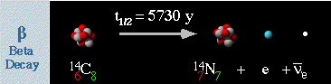
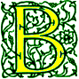
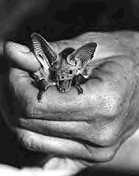
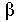
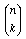
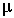

Signs for technical/specialized vocabulary
David Bar-Tzur
Links updated monthly with the help of LinkAlarm.


Beta decay1; bat.2
EXPLANATION OF THE GLOSSING SYSTEM
(to understand how I describe the signs in this dictionary).
For content knowledge of how to use the physics terms in context, see Guided tutorial in physics for interpreters.
For negotiating and developing temporary signs, see Preparation and sign negotiation
For vocabulary lists to determine helpful signs for a specific discipline, see Vocabulary lists by topic.
- B0 meson
- "B" + O"superscripted".
- baal koreh
- TORAH READER.
- baal tefillah
- PRAY LEADER.
- baal t'shuvah
- REPENT, GO-#BACK-TO TORAH.
- baby crier
- BABY CRY (MACHINE).
- baby N connector
- B-N-C.
- Bachelor of Arts
- DEGREE, B-A, where the first sign is (2h)[F] or [O], POs away, FOs up, touch side to side, then separate.
- Bachelor of Science
- DEGREE, B-S, where the first sign is (2h)[F] or [O], POs away, FOs up, touch side to side, then separate.
- bachelor's (degree)
- (<) B-A, (>) B-S.
- back (anatomy)
- (1) [A dot], PO > NDS, points once over shoulder to back. (2) FT of [B] tap DS shoulder.
- backbone
- (1) Touch backbone by bringing arm around waist to back, then (2h)G-CLs are held high, NDH above DH, and DH moves down to outline the shape of the backbone. For a QuickTime movie of this sign, see ASL browser - backbone. (2) Index finger taps back bone at neck and (2h)V:-CLs are held high, NDH above DH, and DH moves down to outline the shape of the backbone.
- back dive
- (1) [A dot], PO > NDS, FO up, moves thumb back over shoulder + DIVE. (2) [U^], PO down, FO > NDS, touches FT to [B], PO down, FO > DS, and DH jumps up and descends as [B], PO > NDS, FO up.
- back dive straight
- [U^ or U^ dot], PO down, FO > NDS, touches FT to [B], PO down, FO > DS, DH jumps up and descends as [B], PO > NDS, FO up.
- back dive tuck
- [U^ or U^ dot], PO down, FO > NDS, jumps off back hand of [B], PO down, FO > DS, DH rises and becomes an [S], PO < NDS, FO up, and descends as a [B], PO > NDS, FO up.
- back door (basketball)
- ME, DRIBBLE NDH makes a 1-CL showing "me" moving > NDS and holds it in place. YOU, DH makes 1-CL showing "you" moving > NDS and (2h)[B], start with FOs away, DPO down, NDPO up, hands move away together, then circle back slightly and end with FOs up the DH and then both move together.
- back end
- B-E.
- background
- (1) B-G is fingerspelled under NDH [B], PO down, FO > DS. (2) B,G-LAW, that is, is [B], PO away, touches upper half of NDH [B], PO down, FO > DS, then moves down while changing to [G] and touches lower half.
- back hurdle (diving)
- [U^ or U^ dot], PO down, FO > NDS, jumps off backhand of [B], PO down, FO > DS, bends to [U:], and descends as [U], PO > NDS, FO up, touch the backhand again.
- back inward (dive)
- [U^ or U^ dot], PO down, FO > NDS, jumps off back hand of [B], PO down, FO > DS, rises to [O^], PO up, and descends as [B], PO > NDS, FO up.
- back pike (diving)
- [B^], PO down, FO > NDS, jumps off back hand of [B], PO down, FO > DS, rises to [O^], PO up, and descends as [B], PO > NDS, FO up.
- backrub
- (2h) [B] tap shoulder twice, then both hands touch the shoulder and then move in a manner that is, similar to that of rubbing (massaging) a person's shoulder. For a QuickTime movie of this sign, see ASL browser - massage.
- backslide
- (1) AVOIDwg. (2) [V] touches FT to [B], PO up, and "slips and falls".
- backstroke
- (2h)[Bb], POs away, FOs up, alt. stroke backwards towards shoulders.
- back-up
- ~ (a car)
- CAR, 3-CL'car backs up'.
- ~ (records to avoid loss)
- (1) BEHIND, but with NDH further away from DH. (2) (1) + U-P. For a QuickTime movie of this sign, see ASL browser - back-up.
- bacteria
- (1) (2h)[A], the flat part of the DH nail on the thumb is rubbed against the flat part of the nail of the thumb of the other hand. (2) B-A-C-T.
- bacteria vaginosus
- B-V.
- badminton
- [bO], PO away, FO up, bats ball high in the air, moves slightly > DS, then bats again.
- Bahrain (مملكة البحرين)
- [As], taps ulnar (pinky) side of hand against the DS hip. For a film of this sign, click on Bahrain (مملكة البحرين).
- Baird, Chuck
- [C] taps DS of chin, changes to a [B] and taps chin again.
- bait chaim
- JEWISH + (2h)5-CL'grave' + THEREABOUTS. THEREABOUTS = [5], PO down circles parallel to the floor.
- bait haknesset
- (1) S,Y-CHURCH. (2) S-CHURCH. For a QuickTime movie of this sign, see ASL browser - synagogue.
- Bait haMikdash
- TEMPLE.
- bait knesset
- (1) S,Y-CHURCH. (2) S-CHURCH. For a QuickTime movie of this sign, see ASL browser - synagogue.
- bait midrash
- TALMUD STUDY PLACE.
- bait olam
- JEWISH + (2h)5-CL'grave'+ THEREABOUTS. THEREABOUTS = [5], PO down, circles parallel to the floor.
- bait tefillah
- (1) S,Y-CHURCH. (2) Starts like WORK and the DH is brought upwards in a small arc. (Heb) "House of Prayer." The Jewish place of prayer and the study of Jewish law.
- bake
- DH [B], PO up, FO away, puts an imaginary object into the oven, which is represented by NDH [B], PO down, FO > DS, held high above.
- balance
- ~ (scale, n)
- (1) (2h)[B^], POs ><, FOs up, are held side by side and alt. ascend and descend slightly. (2) (2h)[B^], POs away, FOs up, are held side by side and alt. ascend and descend slightly.
- ~ (v)
- (1) (2h)[B^], POs ><, FOs up, are held side by side and alt. ascend and descend broadly. (2) (2h)[B^], POs away, FOs up, are held side by side and alt. ascend and descend broadly.
- balance a chemical equation
- CHEMICAL EQUATION, CHANGE'small back and forth' BALANCE.
- balanced equation
- EQUATION BALANCE FINISH, where EQUATION is execute the sign EQUAL, but with a single movement and immediately sign SENTENCE from the final position.
- balance of authority
- A-POWER, BALANCE.
- balance sheet (Accounting)
- BALANCE PAPER.
- bald
- [open 8], PO down, travels back from forehead.
- balk
- ~ (back dive)[V^], PO down, FO > NDS, touches FT to [B], PO down, FO > DS, and [V] becomes [V:] as if knees buckled under.
- ~ (Baseball)
- B-A-L-K.
- ~ (forward dive)[V^], PO down, FO away, stands on backhand of [B], PO down, FO away, and [V] becomes [V:] as if knees buckled under.
- ball (Baseball)
- show number of ~ (Baseball signal)
- Number is shown on NDH, PO away.
- ball and socket joint
- Fist of [S] is loosely held by [C] and revolves in it with some nodding at the wrist.
- ballet
- (1) (2h)[B^], POs down, FOs away, hands alt. descend and ascend slightly as if dancing on one's toes. (2) [R] touches palm of [B], PO up. DH jumps up and opens to a [V] and then lands on palm back to an [R].
- ball gown
- (FANCY +) (2h)[5] touch thumbs to shoulders and descend deeply and slowly.
- band
- (1) FT of (2h)[1] moves as if conducting an orchestra. For a QuickTime movie of this sign, see ASL browser - orchestra. Note that the movie includes AGENT, which I believe is a mistake. To distinguish this from "orchestra", one could fingerspell B-A-N-D to the end. (2) (1) + GROUP.
- bandage
- FT of [U] run across back of NDH [B], PO down, FO away, as if applying a band-aid. If the location is known and if it is wrapped or taped, this may be shown on the body. For a QuickTime movie of this sign, see ASL browser - band-aid.
- band-aid
- FT of [U] run across back of NDH [B], PO down, FO away, as if applying a band-aid. If the location is known and if it is wrapped or taped, this may be shown on the body. For a QuickTime movie of this sign, see ASL browser - band-aid.
- bandwidth
- (1) B-W. (2) B-A-N-D WIDE, that is, (2h)[B], POs ><, FOs away, hands separate.
- bangs
- HAIR + (2h)[1] touch FTs at middle of forehead and separate showing lower hairline.
- bank
- ~ (a financial institution)
- (1) #BANK, where [B] tips forward while changing into an [N] and then straightens out into a [K]. (2) [O^] stuffs FTs into [C], PO away, FO away, several times.
- ~ (a row, as in "a ~ of capacitors")
- (2h)A-CL, POs ><, FOs away, show a row of objects. This can be repeated to show several rows.
- ~ (computers, as in "a data ~")
- [O^] stuffs FTs into [C], PO away, FO away, several times.
- river ~
- RIVER, (2h)C-CL, POs down, FOs away, move forward, showing both banks of the river.
- banking
- BANK SYSTEM.
- bankrupt, bankruptcy
- ~
- (2h)[B], POs down, FOs > back, strike neck on respective sides.
- declare ~
- ANNOUNCE BANKRUPT.
- bank shot (basketball)
- DH [1], PO down, moves horizontally at angle > NDS, strikes FT of index finger against NDH [B], PO > DS, FO away and bounces off at an angle.
- baptism, baptize
- ~ (churches that baptize infants)
- BABY + with NDH still in place from previous sign, DH [O^] is held above head and opens to [5^] to show sprinkling.
- ~ (churches that pour water on the baptized rather than immerse them)
- WATER + [C] pours imaginary water on head.
- ~ (churches that sprinkle water on the baptized rather than immerse them)
- WATER + DH [O^] is held above head and opens to [5^] to show sprinkling.
- ~ (Roman Catholic)
- [W] touches index finger to chin then to DS temple. For an animated gif of this sign, see Animated dictionary of religious signs - Deaf Missions: Baptize.
- baptismal font, baptistery
- BAPTIZE PLACE.
- Baptist
- (2h)[A dot], POs ><, FOs away, both hands are tipped to one side so that the thumbs point > NDS, then > upwards. For an animated gif of this sign, see Animated dictionary of religious signs - Deaf Missions: Baptize.
- bar
- [A dot], PO away (or > NDS), FO up, shakes at chin.
- barium
- B-A. For more information on this and other elements, see The elements. And for fun, see Elements by Tom Lehrer. To see this song with captions, go to The Elements song by Tom Lehrer.
- bar mitzvah (pl. b'nai mitzvot)
- The NDH arm is held out in an [S] (like for the sign STONE) and the DH is held above in the HS used for signing TIE-KNOT while an imaginary strap is wound around the wrist. (< wrapping of t(e)fillin straps on the arm.)
- barometer
- (1) WEATHER TEMPERATURE, that is, (2h)[W], POs ><, FOs up, are in contact at the thumbs and maintain contact while twisting, then (2h)[1], DH, PO down, rubs up and down against ND, PO away. For a QuickTime movie of this sign, see ASL browser - barometer. (2) WEATHER GAUGE, that is, (2h)[W], POs ><, FOs up, are in contact at the thumbs and maintain contact while twisting, then DH [1], PO away, FO up, is held behind NDH [C], PO > DS, FO up, as if it were the frame to the meter, and the DH twists slightly as if it were the moving needle.
- barometric pressure
- WEATHER PRESSURE HOW-MUCH? that is, (2h)[W], POs ><, FOs up, are in contact at the thumbs and maintain contact while twisting, then DH [B], pushes down repeatedly with palm against NDH [S], FO away + HOW-MUCH?
- barred spiral galaxy
- [5:], PO up, FO away, is held above [S], PO down, FO away. DH descend and strikes NDH while closing to [S] + (2h)[C], POs ><<, FOs away, hands rush together (GRAVITY GROUP-TOGETHER = GALAXY) + (2h)[G], POs away FOs up, are held with DH above NDH and the hands spiral around each other and separate in a plane parallel to the chest.
- bars (media production)
- B-A-R-S. TV
- bartender
- DH [S] pulls back handle on draft tap for beer slightly twice.
- Baruch haShem!
- THANK GOD.
- baryon
- (1) B-A-R-Y-O-N. (2) Q-Q-Q, showing its quark/anitquark status.
- base
- ~ (of a triangle)
- (1) "B". (2) "B" is shaken below thumb of [L], PO away, FO up.
- ~ (in a transistor)
- "B".
- ~ (math)
- [B], PO away, FO up, circles under NDH [B], PO down, FO > DS + (2h)[A] rise several times while contacting chest with palms.
- ~ (chemistry)
- B-A-S-E.
- baseball
- (2h)[S] grasp imaginary bat in the usual way and swing very slightly twice.
- based on
- SET-UP, that is, (2h)[A], POs down, FOs away, DH twists and places little finger side against the wrist of NDH.
- base-two (and so forth)
- BASE~TWO, that is, DH [Bb], PO away, FO up, is held below NDH [B], PO down, FO > DS, circles horizontally, then HS changes to [2]. For a QuickTime movie of this sign, see ASL browser - binary. Note: a similar sign may be used for base-three, base-four, base-five, and so on.
- basic (not acidic)
- B-A-S-I-C.
- basic input output system
- B-I-O-S.
- basket (basketball)
- make a ~
- [X], PO away, FO up, twists at wrist so that the index finger hooks around the thumb of NDH [C], PO > DS, FO away.
- basketball
- (1) [B] dribbles ball twice, then DH [B], PO away, FO away, nods as if making a basket while NDH supports the DH elbow.
(2) (2h)[3] or (2h)[5], POs away, FOs up, are held high and twist rapidly.
- bat
- ~ (baseball)
- (2h)[S], DPO up, NDPO down, FOs away. Hands are held together as if holding a bat and the hands are shaken towards and away 3x.
- ~ (biology)
- (2h)[1], POs towards, are held at chest crossed at wrists, and FTs wiggle. For a QuickTime movie of this sign, see ASL browser - bat.
- batch
- B-GROUP.
- batched
- B-GROUP"each".
- bat mitzvah (pl. batai mitzvos, mitzvot, or mitzvoth)
- (1) GIRL
M-DO'antisymmetrically'. (2) GIRL + the NDH arm is held out in an [S] (like for the sign STONE) and the DH is held above in the HS used for signing TIE-KNOT while an imaginary strap is wound around the wrist. (< t(e)fillin, which boys are obligated to use after their bar mitzvah; since girls get special obligations too, used as a parallel.)
- batter (baseball)
- BAT AGENT.
- battery
- (1) [V:] touches FTs to chin and moves > DS and then forward, like a "7". (2) ELECTRIC. (3) [X], PO > signer, FO > NDS, touches thumb side of [B], PO away, FO up, 2x.
- batting average
- (1) BAT AVERAGE. (2) BAT "A".
- batting order
- BAT, WHO FIRST, SECOND, THIRD?.
- batting practice
- BAT PRACTICE.
- baud
- B-A-U-D.
- bayonet nut connector
- B-N-C.
- beaker
- Palm of [B], PO up, FO away, strikes the bottom of NDH [C], PO > DS, FO away, then with NDH still in place DH [bC] touches FTs to those of NDH and moves > DS while closing to a [bO] to show the pouring groove.
- beam (construction)
- B-E-A-M.
- beam angle (stage lighting)
- [O^], PO down, FO away, descends diagonally while opening into a [5^] and eyes follow the angle of the beam.
- bean
- (1) [bX] twists at the FT of NDH [1] as if trying to open it. For a QuickTime movie of this sign, see ASL browser - bean. (2) DH flicks thumb against index finger while traveling down NDH [1], PO > DS, FO away, as if removing beans from a pod.
- bear
- (2h)[5:] cross arms at wrists and scratch chest. For a QuickTime movie of this sign, see ASL browser - bear.
- beard
- ~ (general or short)
- (2h)[bC] outline beard by starting under nose and separating.
- ~ (long)
- [5:], PO up, descends from chin.
- bearing (structural characteristic)
- [S], PO > signer, FO > NDS, presses down on [B], PO down, FO > DS.
- beast
- The fingertips rest on the chest while the hands move back and forth. For a QuickTime movie of this sign, see ASL browser - beast.
- beat (at a competition or war)
- (2h)[S], DPO > NDS, NDPO down, FOs away, are held with DH on top of NDH and DH strikes NDH at wrist while index and middle fingers shoot out suddenly.
- ~ (without mercy)
- (2h)[B], POs down, FOs away, move rapidly towards the team that was beaten and close the hands to (2h)[A]. Hard to find one English word that captures this sign: bury, murder, steamroll, whoop their "butts".
- ~en
- (2h)[S], DPO > signer, FO up, NDPO > down, FOs > DS, are held with DH wrist against little finger side of NDH on top of NDH and DH strikes NDH at wrist while index and middle fingers shoot out suddenly. A passive form of BEAT.
- beat frequency oscillator
- B-F-O.
- Beatitudes
- (1) B-LAW. (2) EIGHT BLESSING.
- beaver
- (1) [V:] wiggles FTs while "gnawing" at the elbow of NDH [5], held high as if it were a tree. For a QuickTime movie of this sign, see ASL browser - beaver. (2) (2h)[B], POs down, cross at wrists and DH waves as if slapping mud against dam with tail. (3) Arms are held like TABLE, but the DH is below with PO up and slaps the ND arm elbow. For a movie of this sign, see Dictionary of Sign (ASL) - beaver.
- bedridden
- [V], PO up, rests in the palm of NDH [B], PO up, and both hands circle vertically with th.
- bee
- DH [F] touches the cheek with its joined fingers to represent an insect biting; then changes to a [Bb] and brushes it aside. For a QuickTime movie of this sign, see ASL browser - bee.
- beef
- B-E-E-F.
- Beelzebub
- DEVIL< (Heb) "ba'al zevuv: Lord of the Flies." The fallen angel who actively opposed the will of God and encouraged or tricked others into doing likewise. Another name for the Devil.
- beeper
- [B] closes thumb on palm twice at hip.
- beer
- BROWN: thumb side of [Bb] slides down DS of mouth twice. Excuse a digression, but I love the German sign BIER which brings the C-CL to the lips and then brings it up slightly and down suddenly from the German custom of slamming the Stein (German beer mug) down on the table with a thud.
- beet
- RED + DH [B] slices twice against NDH [S], PO down. For a QuickTime movie of this sign, see ASL browser - beet.
- begotten of the Father, not made
- GET-from above HEAVENLY-FATHER. NOT MAKE.
- behavior
- (2h)[B], POs down, FOs away, move side to side antisymmetrically.
- behind (sports)
- [A dot] points thumb down and descends.
- bel
- "B".
- belch
- [B^] touches FTs to middle of chest and hands moves upwards and down slightly while body moves forward. For a QuickTime movie of this sign, see ASL browser - belch.
- Belgium
- (1) [B], PO >NDS, touches side of mouth and moves away from signer.1 (2) [5:] touches fingertips to top of head.1 (< royal crown.) To see the reference source for the sign(s) for this country or to look up other countries in the same geographical area, see Indigenous signs for countries. To find signs for cities within this country (some have no entries) see Indigenous signs for cities.
- believability
- (1) BELIEVE CAN. (2) BELIEVE CAN+.
- believe
- DH [1] touches temple, then changes to a [C] and clasps the NDH [C]. For an animated gif of this sign, see Animated dictionary of religious signs - Deaf Missions: Believe.
- belittle
- (1) [L], PO away, touches back of [B] and closes to a [bO] while retaining contact, then repeats the motion but in the space of the person being belittled. (2) FEEL-SMALL, that is, [B] touches thumb to chest, then closes to a [O] while retaining contact, then repeats the motion but in the space of the person being belittled.
- belittled
- (1) FEEL + [L], PO away, touches back of [B] and closes to a [bO] while retaining contact. Similar to PRINT, but the NDH has PO down. For a QuickTime movie of this sign, see ASL browser - belittle. Note that I added a "d", since this signs refers to the person who feels belittled, not the person who belittles. (2) FEEL-SMALL, that is, [B] touches thumb to chest, then closes to a [O] while retaining contact.
- Belize
- [Bb], PO away from signer, FO up, descends in a wavy pattern. To see the reference source for the sign(s) for this country or to look up other countries in the same geographical area, see Indigenous signs for countries. To find signs for cities within this country (some have no entries) see Indigenous signs for cities.
- bell bottoms
- (2h)[B] trace outline of pants from sides of DS leg downward.
- bellows (camera)
- (2h)[B], POs ><, FOs away, are held side by side and separate while moving in an accordion-like fashion.
- bell-shaped curve
- C-U-R-V-E,
1outline-CL'drawbell-shaped curve'.
Bforearm-CL'x-axis'-------------->.
- bellybutton
- Thumbside of [F] is placed against the site of the belly button.
- belt
- (1) (2h)[G] traces outline of belt from sides to middle. (2) (2h)[H] approach and overlap, coming from sides.
- belt-zone circulation
- (2h)bC-CL'belt of planet' CIRCULATION.
- Bemidbar
- N-U-M.
- benched
- ~ (baseball)
- SIT FINISH.
- ~ (basketball)
- THROW-OUT, SIT. Where the first sign is (2h)[S] grab a hold of an imaginary object, pull it slightly > NDS, and then heave it > DS, releasing it with hands opening to (2h)[5:].
- benchmark
- MEASURE HOMOGENOUS.
- bench warrant
- COURT ORDER ARREST.
- bend
- (2h)[S], POs down, FOs away, hold an imaginary rod and bend it.
- Bendara
- AFRICA NATION FLAG. There is a long standing debate on a sign for AFRICA. Since Africa comprises many countries, there is no indigenous sign. For more discussion of this issue, see Introduction to use of indigenous signs. (1) Thumb of [A] circles face, but should not land on the nose. (2) [5^], PO away, outlines the shape of the continent by moving towards the right and then down while closing to [O^]. For a QuickTime movie of this sign, see ASL browser - Africa.
- benediction
- ~ (general)
- BLESS CONGREGATION.
- ~ (Roman Catholic and High Church)
- (1) (if done with monstrance) (2h)S-CL hold monstrance and move in the sign of the cross1. (2) [B] makes the sign of the cross in the direction of the congregation.
- beneficiary
- GET AGENT.
- benefit
- [F], PO down, FO >NDS, slides down DS of chest.
- benefits and disbenefits (Business)
- (1) BENEFIT, (<) POSITIVE ++-down, (>) NEGATIVE++-down. (2)(<) BENEFIT, (>) NOT BENEFIT.
- benevolent
- KIND, that is, (2h)[B], POs > signer, FOs ><, DH revolves around NDH. (< wrapping a bandage as an act of kindness.)
- Benin
- (1) [B], PO > signer, FO up, moves away while twisting to PO away from signer. (2) [B], PO away, FO up, moves > DS, then down. To see the reference source for the sign(s) for this country or to look up other countries in the same geographical area, see Indigenous signs for countries. To find signs for cities within this country (some have no entries) see Indigenous signs for cities.
- bennies (amphetamine)
- PILL (which see) + (2h)[S] are brought up to eyes and touch cheeks while opening to (2h)[C].
- bentsh licht
- ~ (Festivals)
- BLESS + (2h)bX-CL 'strike match and light candle'.
- ~ (general)
- (2h)bX-CL 'strike match and light candle'.
- ~ (Sabbath)
- (2h)bX-CL 'strike match and light candle' + BLESS.
- Berkeley standard distribution
- B-S-D.
- berkelium
- B-K. For more information on this and other elements, see The elements.
- Bermuda
- (2h)[B], POs > signer, are held with DH held high and NDH held at chest, both hands twist at wrists in place. (< from an indigenous dance.) To see the reference source for the sign(s) for this country or to look up other countries in the same geographical area, see Indigenous signs for countries. To find signs for cities within this country (some have no entries) see Indigenous signs for cities.
- berry
- (1) [F] pulls berry from mouth. Also used for "strawberry". For a QuickTime movie of this sign, see ASL browser - berry. (2) [O] twists FT against FT of NDH [1]. Also used for "strawberry".
- beryllium
- B-E. For more information on this and other elements, see The elements. And for fun, see Elements by Tom Lehrer. To see this song with captions, go to The Elements song by Tom Lehrer.
- (Please) be seated!
- (2h)[B], POs down, FOs away from signer, move down slowly.
- best boy
- ASSISTANT ELECTRICITY AGENT.
- beta (lowercase, )
- Draw the shape of the letter in the air with the index finger.
- beta particle
- Draw a lowercase beta () in the air + hand is held PO up in somewhat of a [W] while the thumb is flicked against the little finger.
- Bethlehem
- "B" CITY.
- betray
- (1) [horns]-SUBSTITUTE. (2) NDH [1], PO >DS, FO up, is held at the wrist of DH [B], PO > NDS, FO away, and DH bends at wrist becoming FO > NDS. (3) INDEX-betrayer "verb", TRUST GONE. Supply the verb for what kind of action constituted the betrayal. (4) (2h)[horns], POs down, FOs > person being betrayed, DH descends and bounces off NDH > person being betrayed. (5) (2h)[horns], POs ><, FOs up, DH touches index finger to nose, moves > DS, then swings back and glances the NDH with the dorsum (back of hand). For a movie of this sign, see Dictionary of Sign (ASL) - betray.
- betrayed
- "verb", POSS.-betrayed TRUST GONE. Supply the verb for what kind of action constituted the betrayal. (2) (2h)[horns], POs down, DFOs away, NDFO > signer, DH descends and bounces off NDH > signer.
- bewilder
- CAUSE PERPLEXED, that is, (2h)[S] are held at the chest as if holding a rope and move forward while opening to (2h)[5] +
[1], PO away, FO up, strikes the forehead with the back of the hand and then the finger curls like a question mark. For a QuickTime movie of the first sign, see ASL browser - cause and for the second sign see ASL browser - bewilder.
- bewildered
- PERPLEXED, that is, [1], PO away, FO up, strikes the forehead with the back of the hand and then the finger curls like a question mark. For a QuickTime movie of this sign, see ASL browser - bewilder. Note that I added an "ed", since this signs refers to the person who feels bewildered, not the person who bewilders someone.
- bewitch
- (2h)[5], POs down, FOs > the person or thing being bewitched, FTs wg with eyes squinting. For a QuickTime movie of this sign, see ASL browser - bewitch.
- bewitched
- [5] points its FT > the signer's face, FT wg and hand moves away from face with the face following after it and the hand closes to [S] with thp. For a QuickTime movie of this sign, see ASL browser - bewitch.
- Bi
- B-I. The cultural term for bisexual.
- bias
- (1) B-I-A-S. (2) AGAINST.
- Bi-Bi
- B-I-B-I.
- Bible
- ~ (Christian)
- (1) JESUS OPEN-BOOK. For an animated gif of this sign, see Animated dictionary of religious signs - Deaf Missions: Bible.
- ~ (general and Jewish)
- (1) B-LAW. For a movie of this sign, see Dictionary of Sign (ASL) - Bible. (2) GOD BOOK. For a movie of this sign, see Dictionary of Sign (ASL) - Bible. (3) (2h)[B] are held together and brought down from "Heaven" to neutral space and opened like a book. For a movie of this sign, see Dictionary of Sign (ASL) - Bible.
- bicameral
- CONGRESS HAVE TWO* GROUP, where the first sign is C-MEMBER.
- bid
- (2h)[B], POs away, FOs up, alt. raise and lower hands.
- Big Bang
- (1) B-I-G B-A-N-G. (2) LONG-AGOwg UNIVERSE EXPLODE.
- Big "D" Deaf
- [bC] is held against the index finger, similar to WORD but held up so that it looks like an upper case "D" + DEAF.
- bijection
- (1) B-I-J-E-C-T. (2) (one-to-one map) (2h)[1], POs ><, FOs up, hands move alt. up and down + M-A-P.
- bilateral
- BOTH + (2h)[B], run palms down the sides of the chest.
- bilingual
- B-I LANGUAGE.
- Bilingual-Bicultural
- (1) (<) B-I LANGUAGE, (>), B-I CULTURE. (2) B-I-B-I.
- billion
- ~
- (1) The sign THOUSAND is made three times. For a QuickTime movie of this sign, see ASL browser - billion. (2) B-I-L-L-I-O-N.
- ~ electron volts
- B-E-V.
- billions of floating point operations per second
- G-F-L-O-P-S.
- bimah
- (2h)[B], POs down, FOs away, touch thumbsides, separate, twist so that POs ><, and move downwards.
- binary pulsar
- DOUBLE + (2h)[O^], POs away, FOs up, flash open and closed repeatedly.
- binary
- BASE~TWO, that is, DH [Bb], PO away, FO up, is held below NDH [B], PO down, FO > DS, circles horizontally, then HS changes to [2]. For a QuickTime movie of this sign, see ASL browser - binary.
- binary coded decimal
- B-C-D.
- binary star
- DOUBLE STAR.
- binary synchronous communications
- B-S-C.
- binding (chemistry)
- (2h)[F] join together and are moved back and forth. For a QuickTime movie of this sign, see ASL browser - bond.
- binding energy
- CONNECT ENERGY.
- Bin Laden, Osama (Usama)
- (1) Trace the outline of the head with [B], FO down, then trace the beard from chin down with [L:], PO > signer, FO > NDS. (2) B-L. (3) O-B-L.
- binoculars
- (2h)[C] twists at eyes as if focusing binoculars. For a QuickTime movie of this sign, see ASL browser - binoculars.
- binomial
- [B], PO > NDS, FO away, moves > DS in two small arcs.
- binomial coefficient
- BINOMIAL C-O-E-F-F. Note: A given binomial is of the form , is read "n over k", and is signed N, K'produced below N' (2h)bC-CL'parentheses surround n over k'.
- biofeedback
- B-I-O + FEEDBACK.
- bio female
- BORN GIRL/WOMAN.
- biology
- B-SCIENCE. For a QuickTime movie of this sign, see ASL browser - biology.
- bio male
- BORN BOY/MAN.
- bioreactor
- 1outline-CL'draw outline of larger circle from above'.
- bi-partisan
- ALL (BOTH) P-A-R-T-Y CO-OPERATE.
- bipolar (disorder)
- (2h)[open 8], FTs rub against chest as the hands alt. rise and fall.
- bipolar complementary metal-oxide semiconductor
- B-I-C-M-O-S.
- bipolar field-effect transistor
- B-I-F-E-T.
- bipolar flow
- TWO (PO > signer) WAY + (2h)[4:], POs down move > opposite sides while DH brushes over the top of the NDH and then repeat.
- bipolar junction transistor
- B-J-T.
- "bips" (Bits Per Second)
- B-P-S.
- Birkat haMazon
- EAT BREAD FINISH, BLESS.
- birth
- ~
- (1) (2h)[B], DH touches belly and then "arrives" at the NDH, PO up, FO > DS, similar to ARRIVE. (2) (2h)[B] held like the initial part of BABY, then DH slips straight down NDH and moves underneath it while pronating.
- give ~
- NDH [S], PO down, pushes its way out from under the modified [B], as if the head were presenting itself.
- birth control
- (1) BECOME-PREGNANT PREVENT, where the first sign is (2h)[5], FOs >< moves towards each other from the sides of the stomach and interlace FTs. (2) B-C. This sign is often limited to "the pill".
- birth defect
- BORN, BODY HAVE PROBLEM.
- bisect
- DIVIDE (>) ONE-HALF, (<) ONE-HALF.
- (perpendicular) bisector
- DH [1^], PO down, touches NDH [1], PO down, FO > DS, at midjoint + DIVIDE (>) ONE-HALF, (<) ONE-HALF.
- bisexual
- (1) B-I-S-E-X-U-A-L. (2) B-I. (3)(MALE, FEMALE +) DH [V:], PO away from signer, NDH [V], PO > signer. DH moves back and forth from one finger to the other of the NDH. (4) [V:], PO down, hops side to side over [B], PO > DS, FO away. (5) [as a joke] NDH [Bb] is held at the face like the beginning position for STRAIGHT, and GAY is signed so that the thumb and forefinger encase the NDH.
- bishop
- ~ (LDS [Mormon])
- [B] taps pinkie side of [B] against NDH wrist. The leader of a ward.
- ~ (Orthodox Catholic)
- [B] is held above the head, moves to DS then down to the shoulder. (< the headdress worn when not serving mass.)
- ~ (Roman Catholic and High Church)
- (1) KISS-RING. For a QuickTime movie of this sign, see ASL browser - bishop. (< kissing the ring of the bishop as a sign of respect for his office.) (2) CATHOLIC + KISS-RING. (< kissing the ring of the bishop as a sign of respect for his office.) (3) (2h)[B] traces the outline of the miter (bishop's hat) by touching the head with the heel of the hand and bringing the hands upwards and touching FTs. (< bishop's miter.)
- bismuth
- B-I. For more information on this and other elements, see The elements. And for fun, see Elements by Tom Lehrer. To see this song with captions, go to The Elements song by Tom Lehrer.
- bison
- (2h)[C] are held at temples and arc out while closing to (2h)[S] to indicate horns. For a QuickTime movie of this sign, see ASL browser - bison.
- bit (computers)
- DH [Bb] skips down the palm of NDH [B], PO > DS, in tiny jumps.
- bite
- ~ (animal)
- [C] closes its "teeth" on NDH [B], PO down, FO > DS.
- ~ (computers)
- DH [Bb] slides down the palm of NDH [B], PO > DS.
- ~ (insect)
- [X] stings back of NDH [S], PO down.
- bit error rate tester
- B-E-R-T.
- bits per inch
- B-P-I.
- bits per second
- B-P-S.
- Black (African American)
- There is a subtle difference between BLACK the color and BLACK the cultural identity. The color actually runs the FT along the forehead, whereas the cultural identity keeps the FT about six inches away from actual physical contact. There seems to be a trend towards this with many cultural signs such as GAY and LESBIAN where full contact has been changed to partial or no contact.
- black dwarf
- BLACK STAR + [rolled F]-CL"sma" where the handshape is an F, but the index and thumb are curled tightly and the hand moves away in an intense motion and "sma" is mouthed.
- black hole
- BLACK + (2h)[C], FOs up, touch FT to make hole.
- black-out
- ~ (Addiction)
- (1) BLACK O-U-T. Note: There is a prevalent confusion that a black-out is a loss of consciousness, but it is actually a loss of memory as to what happened during a period of consciousness due to drug use. Since the next two signs also are used to mean "faint", the next two signs may be contraindicated (don't use them). They are described because they may be used by Deaf people to mean black-out and the interpreter should be aware of this. (2) [1] touches temple, then (2h)[S], PO towards, crossed at wrists, open while pronating, like THINK SAVE, with a sudden twist of the head from NDS to DS. (3) Touch temple then (2h)[S] move like SAVE while head twists from NDS to DS.
- ~ (stage lighting)
- (1) BLACK + (2h)[5^], POs down, FOs away, descend from above and close to (2h)[O^]. (2) DARK.
- bladder, urinary
- "T" (mouth "urine") + (2h)[C] tap FTs together at belly.
- blameless
- INNOCENT.
- blanche (health sciences)
- Press on area that should blanche (or back of hand if this is used generally) + WHITE with hand reopening and "throwing" the whiteness against the area that blanches.
- B-Language
- "B" LANGUAGE.
- blank
- ~ area
- Pass FT of [open 8] across area that is, blank or along [B], PO down, FO away.
- ~s (unarmed bullets)
- DH [G] strokes FTs down side of NDH [1], PO > DS, FO away + pass FT of [open 8] along [B], PO down, FO away.
- blaspheme, blasphemy
- [5:], PO > signer, is held at mouth and moves away while closing to [S].
- blast
- (2h)[S] are held low at chest and crossed at wrists. The hands rise and open to (2h)[5] while showing by mouth and facial expression the act of explosion. For a QuickTime movie of this sign, see ASL browser - blast.
- blasting (welding)
- The [L], PO > signer moves back and forth aimed at the palm of NDH with squinted eyes and blowing between lips as if a lot of pressure is being exerted.
- blast-off
- [R] blasts off from [B], PO up or down. For a QuickTime movie of this sign, see ASL browser - blast-off.
- blazars
- B-L-A-Z-A-R-S.
- bleed
- ~ (general)
- (2h)[5], POs towards signer, FOs ><, NDH is held under chin and DH descends once from mouth while wiggling FT and then strums NDH while wiggling several times. For a QuickTime movie of this sign, see ASL browser - blood. Note difference from BLOOD below.
- ~ (from specific area)
- (2h)[5], POs towards signer, FOs ><, NDH is held under chin and DH descends once from mouth while wiggling FT and then 4-CL show flow of blood from specific area.
- irregular ~ing
- SUDDEN-WRONG BLEED, where the first sign is [Y], PO > NDS, touches bent index finger to chin, then suddenly pronates while maintaining contact.
- bless
- (1) (2h)[A], FOs away from signer, held at mouth with DH closer to mouth. Hands are brought downwards while opening to (2h)[B]. (2) (2h)[O^], POs ><, held at mouth. Hands are brought downwards while opening to (2h)[5]. (3) (2h)[A], thumbside held at forehead. Hands are brought downwards while opening to (2h)[B]. For an animated gif of this sign, see Animated dictionary of religious signs - Deaf Missions: Bless.
- blink
- [G], PO > NDS, FO up, is held alongside eye and closes while that eye blinks. Can be two handed if both eyes are meant.
- blini, bliny
- NDH [B], PO up, FO away, [F], PO away, circles above NDH palm.
- block
- ~ (of cement)
- BOX.
- ~ (computers)
- (2h)[B], POs ><, FO sup, then turn hands so that DPO down, FO > NDS and NDPO down, FO > DS and below DH.
- ~ (prevent movement)
- ~ (general)
- PREVENT.
- ~ (of the ball, not a person's body; Basketball)
- [B], PO away, FO up, moves forward abruptly (with a bounce).
- ~ (of a player's body; basketball)
- (1) DH [4] runs FT down palm of NDH [5], PO > DS, FO away, first palm against palm, and then again with DPO > signer. (2) PREVENT.
- blockade
- (2h)[B] cross at wrists and push outward in a defensive gesture. For a QuickTime movie of this sign, see ASL browser - blockade.
- blockage
- STUCK, PREVENT (FLOW or MOVE).
- block check character
- B-C-C.
- blocking (theater)
- MOVE.
- blood
- (2h)[5], POs towards signer, FOs ><, NDH is held under chin and DH descends once from mouth while wiggling FT. Note difference from BLEED above.
- blood pressure
- BLOOD + [C] grasps NDS upper arm, like a blood pressure cuff.
- bloodshot eyes
- (1) RED + (2h)[5:], PO > eyes, draw their FT across the eyes as they separate. (2) RED + (2h)[5:], PO > eyes, rush towards the eyes.
- blood test
- ~ (with pin prick)
- (1) (2h)[5], POs towards signer, FOs ><, NDH is held under chin and DH descends once from mouth while wiggling FT. + [bO] pricks index finger + ANALYZE.
- ~ (with syringe)
- (1) [5^], FT towards inside of elbow, hands from inside elbow > DS while closing to [O^] + ANALYZE. (2) [L] touches index finger to inside of elbow and withdraws it while bringing thumb to side of index finger (in plane of palm) + ANALYZE.
- blood transfusion
- BLOOD + EXCHANGE.
- blouse
- (2h)[5] touch thumbs to shoulders and descend to waist, but with an outward arc that shows the puffiness of a blouse.
- blow-by (piston)
- [4], PO > NDS, FO away, brushes repeatedly up fingers of [C], , PO > signer, FOs > DS air is blown through lips.
- blower
- (1) 5^-CL is held next to mouth and hand moves in a circle with the wrist static while the mouth blows out air. (2) Cup hands around mouth and blow out + MACHINE.
- blow something off
- [F], PO down, twists upwards while changing to a [K] while mouthing "fisk".
- blueberry
- BLUE + BERRY (see above). For a QuickTime movie of this sign, see ASL browser - blueberry.
- blue shift
- NDH [5], PO towards, FO up and DH [B], PO > NDS, FO up. DH pivots from middle finger to little finger as if shifting towards the blue side + BLUE.
- bluff
- FLATTER with th. For a QuickTime movie of this sign, see ASL browser - bluff.
- B'nai Yisrael
- Don't sign CHILDREN O-F ISRAEL! Better, (1) JEWISH PEOPLE. (2) (2h)#ALL JEWISH PEOPLE.
- boa
- (2h)[5:], POs > neck, FOs up, start below chin and separate while wg + [O^] throws one end of the boa across NDS shoulder.
- board
- ~ (computers)
- (1) RECT-CL + [B], PO > signer, FO > NDS, is inserted into the crook of [C^]. (2) [B], PO > signer, FO > NDS, is inserted with a double movement into the crook of [C^].
- ~ (group of people, as in executive ~)
- [B], PO > NDS, FO up, touches NDS of upper chest, then DS of same.
- ~ (wood)
- WOOD, RECT-CL'show relative dimensions', that is, touch FTs of (2h)[bC] and separate while closing to (2h)[bO].
- plug in a ~
- [B], PO > signer, FO > NDS, is inserted into the crook of [C^].
- Board of Deacons
- B,D-MEMBER.
- board of directors
- [B], PO > NDS, FO up, touches NDS of upper chest, then changes to [D] and touches DS of upper chest.
- bochur, yeshiva
- YESHIVA STUDENT.
- bodhisattva
- ENLIGHTENMENT FINISH, BUT STAY HELP OTHER.
- bodek
- INSPECT ANIMAL FOR KOSHER.
- body
- ~ (of animate objects)
- FTs of (2h)[B^] touch respective shoulders and then hips.
- ~ (of inanimate objects, like a car or an essay)
- B-O-D-Y.
- body aid
- BODY + (2h)C-CL, FOs down, are held against chest like the box for a body aid.
- body block (basketball)
- (1) DH [4] runs FT down palm of NDH [5], PO > DS, FO away, first palm against palm, and then again with DPO > signer. (2) PREVENT.
- body cavity
- BODY C-A-V-I-T-Y.
- body hair
- (HAIR +) FTs of [5:] circle against area that is hairy with hu.
- body piercing
- Strike FT of [bO] against tongue, side of nose and ear. If the specific area is known, show only that.
- body region
- BODY LOCAL, where the second sign is [5], PO down, FO away, rubs in circles on [S], PO > DS< FO away.
- Boeing
- (1) AIRPLANE, while mouthing "Boeing". (2) There is an amusing sign (don't use it for interpreting!) that is the sign BORING with the HS [ILY] like AIRPLANE.
- bohrium
- B-H. For more information on this and other elements, see The elements. And for fun, see Elements by Tom Lehrer. To see this song with captions, go to The Elements song by Tom Lehrer.
- Bohr magneton
- Draw a lowercase mu () in the air.
- boil
- [4], PO towards, FO up, circles under [B], PO down, while wiggling fingers. For a QuickTime movie of this sign, see ASL browser - boil.
- boiler
- BOIL MACHINE.
- boiling point
- BOIL TEMPERATURE.
- Bolivia
- The middle and ring fingers are held together against the thumb and the hand, PO up, and the hand is twisted to the side twice like the movement in the sign YELLOW. (< llama head.) Here the sign appears to move forward rather than twist. To see the reference source for the sign(s) for this country or to look up other countries in the same geographical area, see Indigenous signs for countries. To find signs for cities within this country (some have no entries) see Indigenous signs for cities.
- bolo tie
- (2h)[I] descend from neck like the two ends of the string + (2h)[F], POs > signer, are held low and DH is pulled up like the tightening of the tie.
- bolt
- (2h)[5:], POs ><, FOs up, NDH remains stationary, while DH screws it in.
- bomb
- ~ (computers)
- (2h)[5:] interlaced, POs ><, FTs move down while remaining interlaced so that the PO becomes down. For a QuickTime movie of this sign, see ASL browser - break-down.
- ~ (weapon)(2h)[S] are held low at chest and crossed at wrists. the hands rise and open to (2h0[5] while showing by mouth and facial expression the act of explosion. For a QuickTime movie of this sign, see ASL browser - blast.
- ~ (to fail [but not for computers], as in "the play ~ed")
- FAIL.
- carpet ~ing
- EXPLODE, (2h)S->5:(POs down, FOs away)'hands move up to show individual explosions and then separate while continuing to explode, then show the next row exploding'. This last part will look BALONEY while moving quickly.
- bond
- ~ (chemistry, Psychology)
- (2h)[F] join together and are moved back and forth. For a QuickTime movie of this sign, see ASL browser - bond.
- ~ (certificate)
- B-O-N-D.
- Bond, James
- [H dot], PO > signer, Fo up, is held against NDS shoulder like a gun. For a photo of this sign, see BritishSignLanguage.com - James Bond.
- bonds
- B-O-N-D.
- bone(s)
- (1) B-O-N-E. (2) STONE SKELETON, that is, [A] knocks against NDH [S], PO down, then (2h)[V:], POs towards, knock against each other at wrists. For a QuickTime movie of this sign, see ASL browser - bone.
- bong (marijuana water pipe)
- (2h)[C] are held like pipe to mouth and DH moves away to show length.
- book
- ~ (n)
- (2h)[B], are pressed together like a closed book, and then open slightly twice.
- ~ (an appointment)
- (2h)[S], positioned like WORK, but DH circles and then lands on the wrist of NDH.
- Book of Mormon
- BOOK + [M] strokes "beard" at cheek.
- book value
- BOOK VALUE.
- boolean
- B-O-O-L-E-A-N.
- boot, boot up, bootstrap (computers)
- KICK START.
- boots
- (1) (2h)[Bb], DH slices once across NDH at elbow and vice versa. (2) SHOES(1x) + [Bb], PO > back, taps 2x close to elbow. For a QuickTime movie of this sign, see ASL browser - galoshes.
- bore (piston, v)
- [R], FT down, circles above [C], PO > signer, then descends into it.
- born
- NDH [B], PO down, push its way out from under the modified
[B], as if the body were presenting itself. For a QuickTime movie of this sign, see ASL browser - birth.
- born again
- AGAIN BORN. For a QuickTime movie of this sign, see ASL browser - born again.
- boron
- "B". For more information on this and other elements, see The elements. And for fun, see Elements by Tom Lehrer. To see this song with captions, go to The Elements song by Tom Lehrer.
- borrow
- (2h)[K], POs away, arms crossed at wrists are brought to the chest.
- borsht
- [B], PO up, FO > NDS, circles as it brings food to the mouth.
- boson
- B-O-S-O-N.
- boss
- FT of [5:] taps shoulder.
- bottlefeed
- With NDH indicate holding baby and with DH [C] put bottle to baby's mouth.
- bottom (quark)
- "B" PARTICLE.
- bottom out (addiction)
- [Bb], crashes FT into palm of [B].
- bottom surgery (sexual reassignment)
- SURGERY FROM-WAIST-DOWN.
- bounce pass (basketball)
- [B], PO down, moves forward and down at an angle and bounces off NDH [B], PO up, FO away, then moves upwards and away.
- bound for the error
- MAXIMUM ERROR.
- boundary
- DH [Bb], PO > NDS, FO away, totters on NDH [Bb], PO > DS, FO away.
- bow
- ~ (one person)
- (1) Hold [S], PO away, FO up, bows at wrist as signer bows head. (2) Hold arm at waist, and bow at waist.
- ~ (several people)
- (2h)[4], POs away, FOs up, FTs bow at wrist as signer bows head.
- bowel movement
- (1) Thumb of [A dot] is inserted in bottom of NDH [A dot], PO > DS, FO away, then pulled out. (2) B-M.
- bowl (v, bowling)
- [3:], PO up, FO away, opens and closes multiple times.
- bowling
- (1) [5^], PO up, FO away, moves forward slightly twice. (2) [5^], PO > signer, FO down, hand twists up slightly twice. (3) [5^] executes the full swing of a bowling ball.
- (bowling) alley
- A-L-L-E-Y.
- bow tie
- (2h)[S] cross at wrists under chin and shoot out 2x to (2h)[H].
- box
- (2h)[B], first hands show one pair of sides: POs > signer, FOs > opposite sides; then they show the other pair of sides: POs ><, FOs away.
- boxing
- (2h)[S], POs > signer, FOs up, alt. circle vertically.
- boy
- [B] touches thumb to temple and moves away while closing to [O^] 2x.
- boycott
- REFUSE BUY, WHY? PROTEST.
- boyfriend
- BOY (1x) + FRIEND.
- Boy Scout
- BOY + salute with [straightened M].
- brace
- DH grasps wrist of [S], PO down, FO away. Further use of classifiers can show the placement of the brace.
- bracelet
- [open 8] grasps wrist.
- braces (for formulas)
- Draw braces "( )" with (2h)[1] simultaneously.
- brachium region
- Thumbside (ulnar) edge of [B], PO > NDS, FO away, runs along the arm from shoulder to elbow.
- brackets (for formulas)
- Draw brackets "[ ]" with (2h)[1] simultaneously.
- Bragg, Bernard
- [B], FO away, moves down twice while arcing to the DS. Actor.
- Brahma
- SUPREME CREATOR (or MAKER). (2h)[A], FOs away, DH starts below NDH and arcs around it until it is on top + C-MAKE AGENT.
- Brahman
- TRUTH SUPREME, where the last sign is (2h)[A], FOs away, DH starts below NDH and arcs around it until it is on top.
- braille
- (1) [4], PO down runs FT across palm of [B]. FTs may wiggle. (2) BLIND + (1). For a QuickTime movie of this sign, see ASL browser - braille.
- brailler
- BRAILLE MACHINE. Can add mime using the three middle fingers of both hands to work the machine.
- brainstem
- FT of [X] touches DS temple + [bC] traces the stem by the side of the neck several times.
- brake
- (2h)[B], POs away, FOs up, right hand moves down at an angle as if stepping on the brake.
- branch
- ~ (LDS [Mormon])
- B-GROUP.
- ~ (of an organization)
- (2h)[1], POs down, FOs away, are held along side one another and touching. The DH moves away and > DS, while the NDH does not move.
- ~ (of a tree)
- The sign TREE is followed by the movement of the index finger showing a branch sticking out from a tree. For a QuickTime movie of this sign, see ASL browser - branch.
- branch pipe
- (2h)F-CL'pipe' + (2h)[1], POs down, FOs away, are held along side one another and touching. The DH moves away and > DS, while the NDH does not move.
- branchpoint
- (2h)[1], POs down, are held side by side and then the DH arcs off to its respective side + POINT.
- brand
- ~ (an animal)
- (2h)[S] places the imaginary branding iron on the animal + [S] strikes little finger side of [S] against palm of [B], PO > DS, FO away.
- ~ (which company makes it?)
- LABEL. For a QuickTime movie of this sign, see ASL browser - brand.
- brandy
- (2h)[horns], POs ><, FO away, DH taps NDH from above. For a QuickTime movie of this sign, see ASL browser - alcohol.
- Brazil
- (1) [Bb], PO away from signer, FO up, descends in a wavy pattern. (2) [horns], PO away, twists at wrist 2x. (< llama head) To see the reference source for the sign(s) for this country or to look up other countries in the same geographical area, see Indigenous signs for countries. To find signs for cities within this country (some have no entries) see Indigenous signs for cities.
- brazing
- B-R-A-Z-I-N-G.
- break
- ~ (bone)
- (2h)[S], POs down, FOs away, are held side by side as if holding a stick, then separate and twist as if the stick has been broken.
- ~ (rest)
- DH [Bb], PO down, is inserted between the fingers of NDH [5], PO > signer, FO > DS.
- breakdown
- ~ (mechanical or psychological)
- (2h)[5:], POs down, FOs up diagonally, interlace fingers and without separating the FT pivot downwards. For a QuickTime movie of this sign, see ASL browser - break-down.
- ~ (chemical or physiological)
- (2h)[5:], POs down, FOs ><, move towards one another, grasp at the air as if processing something, separate while closing to (2h)[S], then repeat the cycle.
- breakeven (business)
- (<) PROFIT, (>) LOSE, EQUAL.
- breakpoint
- BREAK POINT.
- breast(s)
- (1) [B] touches NDS breast and then DS breast. (2) (2h)[5:], POs > signer, are held at breast and move forward with pc. This is more explicit and emphatic.
- breast augmentation surgery
- (2h)[A dot] make cuts at bottom of breasts + (2h)[5:], POs > chest, are held close to chest and move away.
- breastfeed, breastfeeding
- (1) With NDH indicate holding the baby and DH touches breast with open fingertips and then draws away while closing several times to indicate sucking. (2) Like (1), but no use of NDH. (3) BREAST FEED, where the second sign is (2h)[O^], POs up, FOs away, move forwards several times as if feeding. (4) FEED'from breasts', that is, (2h)[O^], POs up, FOs away, move forwards several times from wrist contact with breasts as if feeding.
- breast reduction surgery
- (2h)[A dot] make cuts at bottom of breasts + (2h)[B] (thumbs not folded in palms) touch thumbs to nipples and hands close partially to (2h)[G||], the motion being like that of "flat tire" but it does not close completely.
- breaststroke
- (2h)[Bb], POs down, FOs away, make large circular motions horizontally, similar to SWIM, but with larger movement.
- breast sucking (can be sexual)
- NDH holds palm against NDS breast and DH touches NDH with open fingertips and then draws away while closing several times to indicate sucking and thp++.
- breathe
- ~ (through mouth)
- (2h)[O^] thumbs are held at sides of mouth and the fingers spread out to (2h)[5] for exhalation and close again (thumbs always at sides of mouth) for inhalation.
- ~ (through nose)
- (1) (2h)[O^] thumbs are held at nostrils and the fingers spread out to (2h)[5] for exhalation and close again (thumbs always at nostrils) for inhalation. (2) Both hands [5], PO towards body move in and out from chest as if imitating breathing.
- hold ~
- (1h)BREATHE + HOLD at chest.
- breed
- (2h)[5], POs towards, hands interlock as they meet from their respective sides. For a QuickTime movie of this sign, see ASL browser - breed.
- Breishit
- G-E-N.
- brethren (honorific address for the congregation)
- (1) BROTHER SISTER. (2)BROTHER+ SISTER+ (2h)HONORIFIC-INDEX"all".
- Brezhnev, Leonid
- [C^] traces FTs against DS eyebrow. (< his bushy eyebrows.)
- bribe
- [O^], PO up, FO away, pushes "money" under the table of [B], PO down, FO > DS, while body leans > DS. For a QuickTime movie of this sign, see ASL browser - bribe.
- brick
- (1) (RED +) (2h)[L], POs away, FOs up, touch index to index, thumb to thumb, then separate while closing to (2h)[bO^]. (2) (2h)[C], POs away, FOs up, touch index to index, thumb to thumb, then separate while closing to (2h)[O^].
- bride
- (2h)[S], POs ><, FOs away, DH is held on top of the NDH as if holding a bouquet and the hands move forward in two downward arcs. For a QuickTime movie of this sign, see ASL browser - bride.
- bridesmaid
- (2h)[S], POs ><, FOs away, DH is held on top of the NDH as if holding a bouquet and the hands move forward in two downward arcs. This is the same sign as "bride"? For a QuickTime movie of this sign, see ASL browser - bridesmaid.
- bright
- (2h)[O^], POs away, FOs up, are held side by side touching. Hand separate while ascending and opening to (2h)[5^].
- brit
- ~ (not milah)
- (1) AGREE. (2) (AGREE) RELATIONSHIP-WITH-God. (Heb) "the Covenant." A general covenant or agreement with God, sealed with a sacrifice.
- ~ (milah)
- (1) (2h)[A dot], POs down, DHFT circles NDHFT as if cutting off foreskin. (2) POs down, DH [A dot] circles NDH [1] FT as if cutting off foreskin. (3) Either (1) or (2) with DELETE (small portion) at the end. (4) DH [V] cuts at tip of NDH [1].
- British thermal units
- B-T-U.
- broadcast
- (1) (2h)[S], POs down, FOs ><, with DH held in front of NDH as if holding a stick, the DH moves repeatedly to and fro. For a QuickTime movie of this sign, see ASL browser - broadcast. (2) NDH [B] is held flat as in TABLE, and the DH [O^], PO away, moves from the elbow to the wrist while opening into [5] as if information is being spread across the land. (3) SPREAD.
- brocha [pl. brachot]
- (1) (2h)[A], FOs away from signer, held at mouth with DH closer to mouth. Hands are brought downwards while opening to (2h)[B]. For an animated gif of this sign, see Animated dictionary of religious signs - Deaf Missions: Bless. (2) (2h)[bO], POs ><, held at mouth. Hands are brought downwards while opening to (2h)[5]. (3) (2h)[A], thumbside held at forehead. Hands are brought downwards while opening to (2h)[B].
- Brocha Achrona
- EAT WITHOUT BREAD FINISH, BLESS.
- brochure
- [G], PO > NDS, FO away, runs FT up little finger side of [B], PO > signer, FO up.
- broil
- broil
- [S], repeatedly opens to a [5^] while pointed at NDH [B], PO up, FO away. For a movie of this sign, see Dictionary of Sign (ASL) - broil.
- bromine
- B-R. For more information on this and other elements, see The elements. And for fun, see Elements by Tom Lehrer. To see this song with captions, go to The Elements song by Tom Lehrer.
- bronchitis
- Thumbside of (2h)[B] rub slightly against lungs.
- broomball
- B-R-O-O-M-B-A-L-L.
- Brother (Christian ~)
- (2h)[L:] trace the outline of the stole down the sides of the chest 2x.
- brotherhood
- (2h)[A dot], DH thumb points down and NDH points up and they both circle one another as they move > DS. For a QuickTime movie of this sign, see ASL browser - brotherhood.
- (My) Brothers and Sisters (honorific to congregation)
- (<) BROTHER+, (>) SISTER+, (2h)HONORIFIC-INDEX"all".
- brouter
- B-R-O-U-T-E-R.
- brown dwarf
- BROWN STAR + [rolled F]-CL"sma" where the handshape is an F, but the index and thumb are curled tightly and the hand moves away in an intense motion and "sma" is mouthed.
- Brownies (Scouts)
- GIRL + salute with [straightened N].
- brownnose (flatter for self gain)
- Thumbside of [B], rubs down DS of nose, like BROWN but in a different location.
- browser
- DH [V], PO down, FO away, is held with thumbside against the palm of NDH [B], PO > DS, FO up, and DH waves slowly at wrist.
- bruise
- BLACK, BLUE + [C] (or [F] or [bC]) touch their thumbside to the area of the bruise.
- bubble
- (2h)[S], POs up, FOs away, hands move up alt. while opening to [5^], similar to the motion for POPCORN.
- Buchner funnel
- B-U-C-H-N-E-R FUNNEL.
- bucket-brigade device
- B-B-D.
- buckle (deflection of a planar material)
- FTs of (2h)[B], POs down, FOs ><, overlap slightly and DH pushes both of them down like the buckling of a bridge.
- Buddha
- (1) There are many Buddhist countries, so in trying to find the most authentic sign for the Buddha, it made sense to use the sign for the city Lumbini, Nepal, where he was born and whose sign commemorates his birth: [loose C dot] is held in the palm of [loose C dot], close to body. (2) Like CONTACT, but DH is PO down, FO > NDS and NDH is PO up, FO > DS; the hands are close to the heart. From http://www.youtube.com/watch?v=o0kPcOkXDSI (YouTube: Sign for Muslim & Buddha), which is no longer extant.
- Buddhism
- DH [1], PO away, FO up, moves away while brushing against the joined middle finger and thumb of NDH [8], PO > DS, FO up.
- budget
- (1) MONEY PLAN. (2) [B] slices at [B], PO up, as if it were a pie. (3) MONEY (1x) O^-EXCHANGE.
- buffalo
- [Y] is held with palm to forehead and twists at wrist while maintaining contact. For a QuickTime movie of this sign, see ASL browser - buffalo.
- buffer
- DH [B], PO > NDS, FO away, vibrates back and forth, trapped in [slightly closed C], PO up, FO away.
- bug (insect and computers)
- [3], FO away, touches thumb to nose and wiggles fingers.
- build
- ~ (general)
- (1) (2h)[U] slap FTs against each other while ascending as if one layer was being piled on another. For a QuickTime movie of this sign, see ASL browser - build. (2) (2h)[B^] slap FTs against each other while ascending as if one layer was being piled on another.
- ~ (in intensity, theater)
- PERFORM [Bb], PO down, FO away, shoots upwards diagonally while eyes widen.
- building
- (2h)[U] slap FTs against each other while ascending as if one layer was being piled on another + (2h)[B], POs ><, FOs away, hands ascend like the sides of a building. For a QuickTime movie of this sign, see ASL browser - building.
- Bulgaria
- (1) [bC] touches tip of nose with thumb, moving away from signer while rotating so that final PO > NDS, FO away from signer. (2) [C] touches tip of nose with thumb, moving away from signer while moving upwards and closing to an [S].(3) [C^] is held in front of nose and moves away from signer. (4) [C^] becomes [A] while doing moustache. For a QuickTime movie of this sign, see ASL browser - Bulgaria. To see the reference source for the sign(s) for this country or to look up other countries in the same geographical area, see Indigenous signs for countries. To find signs for cities within this country (some have no entries) see Indigenous signs for cities.
- bulk
- [5], PO down, FO away, outlines the surface of a pile with a slow upward arc and pl. For a QuickTime movie of this sign, see ASL browser - bulk.
- bulk-channel charge-coupled device
- B-C-C-D.
- bull
- (2h)[Y] hold thumbs to forehead and head dips down and then up like a bull threatening to charge.
- bulldoze
- Little finger edge of [B], PO > signer, FO > NDS, slowly pushes imaginary dirt away on surface of [B], PO up, FO away. For a QuickTime movie of this sign, see ASL browser - pave.
- bulldozer
- TRUCK + little finger edge of [B], PO > signer, FO > NDS, slowly pushes imaginary dirt away on surface of [B], PO up, FO away. For a QuickTime movie of the second sign, see ASL browser - pave.
- bullet
- DH [G] strokes FTs down side of NDH [1], PO > DS, FO away.
- bulletin
- MAGAZINE.
- bulletin board system
- B-B-S.
- bully
- (2h)[L dot] is held at the respective temples and separates rapidly. For a QuickTime movie of this sign, see ASL browser - bully.
- bump
- ~ (n, Medicine)
- ~ (general)
- [1] indicates a bump (lump) on the back of the hand. For a QuickTime movie of this sign, see ASL browser - lump.
- ~ (specific area)
- [1] indicates a bump (lump) in the specific area that applies or, if that is, awkward, [1] indicates a bump (lump) on the back of the hand (for a QuickTime movie of this sign, see ASL browser - lump) and then point to specific area.
- ~ (v, computers)
- ~ (off the system or subsystem)
- KICK.
- ~ (increment, as in "~ the counter by 1")
- INCREASE.
- bun (hairdo)
- (HAIR +) [5:] touches FT to back of head.
- Bunsen burner
- NDH [F], PO > DS, FO away, DH [S], PO up, FO away, is placed on top of NDH and opens to [5] and flutters fingers.
- bunt
- (2h)[A], DPO up, NDPO down, FOs away. Hands are held as if holding a bat, but about 6 inches apart and then move away from body in unison in a sharp restrained movement.
- "buoy" (computers)
- B-E-U-I.
- buoyancy
- POWER + [A], PO > NDS, FO away, floats on the surface of [5], PO down, FO > DS.
- buoyant
- [A], PO > NDS, FO away, floats on the surface of [5], PO down, FO > DS.
- bureaucracy
- SYSTEM 4wg-COMPLICATED with zz.
- buret, burette
- (2h)[F], POs ><, FOs away, DH moves upwards to show a vertical tube, then with NDH still in place, DH changes to [bX] and opens stopcock below NDH.
- Burger King
- [B] touches thumbside to NDS shoulder, then changes to [K] and touches DS waist. For a QuickTime movie of this sign, see ASL browser - Burger King.
- burglar
- (2h)[N] are held under the nose with the DH a little higher and both hands separate. For a QuickTime movie of this sign, see ASL browser - burglar.
- burial society
- FUNERAL SOCIETY.
- buried-channel charge-coupled device
- B-C-C-D.
- burkha (full body covering)
- Cover forehead with DH [B] and mouth with NDH, coming in from the sides + CLOTHES. For veil only, see "hijab".
- burn
- ~ (a sensation that the skin is still undergoing rapid oxidation)
- Outline area on skin with index finger + B-U-R-N + 5wg-CL travels over indicated area.
- ~ (damaged skin resulting from rapid oxidation)
- Outline area on skin with index finger + B-U-R-N.
- ~ (to cause to undergo rapid oxidation)
- Show action that led to burning such as the application of a match + (2h)[S], POs > signer, FOs up, open to (2h)[5] wg and move along area that is burning if it is extended or move in alt. circles perpendicular to the chest.
- ~ (to undergo rapid oxidation)
- (2h)[S], POs > signer, FOs up, open to (2h)[5] wg and move along area that is burning if it is extended or move in alt. circles perpendicular to the chest.
- ~ing sensation in one's penis
- NDH [1], PO down, FO away, represents penis and DH moves in vertical circle, alt. opening to a wiggling [5] and closing to [S], while remaining in contact with FT of NDH.
- ~ing sensation in one's vagina
- NDH [L], PO > signer, FO down, represents vagina and DH circle vertically, alt. opening to a wiggling [5] and closing to [S], while remaining in contact with index finger of NDH.
- ~ out
- ~ (machine)
- BURN + (2h)GONE, where the second sign is (2h)[5], POs > signer, FOs up, move down suddenly while closing to (2h)[O^].
- ~ (person)
- BURN travels up chest + O-U-T.
- burner
- NDH [bC], PO > DS, FO away, DH [5], PO > signer, FO up, wg as it circles under NDH to show flame.
- burp
- [S] is held at chest. PO towards, and flicks index finger up.
- bury
- (2h)[S], POs down, FOs away, hands start far from signer and move > signer in an upward arc while opening to (2h)[B] to show mound of earth. For a QuickTime movie of this sign, see ASL browser - bury.
- bus (computers)
- (1) B-U-S. (2) #BUS, where [B], PO away, FO up, moves forward and closes to an [S].
- bust
- ~ (group arrest by police)
- (2h)[5] interlace FT suddenly.
- ~ (statue)
- (1) [A dot], POs ><, FOs away, hands symmetrically outline a statue from head to sides. For a QuickTime movie of this sign, see ASL browser - bust. (2) [A dot], POs ><, FOs away, hands symmetrically outline a statue from head to sides + (2h)[B], POs down, FOs ><, DH is placed on top of NDH and rises while the NDH is static to show "from the chest up".
- butch
- [S] rubs little finger side of fist against pectoral with tongue stuck in dominant cheek.
- butter
- FT of [U] brush against bottom of NDH [B] palm, and curl into an [N] several times.
- butterflystroke
- BUTTERFLY, that is, (2h)[B[, POs > signer, FOs up, interlace thumbs and flutter fingers together as if wings.
- butt joint
- (2h)[Bb], POs down, FOs away, are slapped together as if joined and the NDH stays in place while the DH [L] runs up and down the index finger of NDH as if welding it.
- button
- ~ (on a machine)
- DH [open 8] repeatedly touches the palm of NDH [B], PO up.
- ~ (on clothes)
- [F], PO > body, hops down from location of one button to another, or if singular, taps at location of button.
- butt weld
- (2h)[Bb], POs down, FOs away, held at chin level, are slapped together as if joined and the NDH stays in place while the DH [L] runs up and down the index finger of NDH as if welding it.
- buzz box
- B-U-Z-Z BOX.
- by (as in "four ~ six feet")
- (2h)[1], POs away, cross fingers like an "X".
- byte
- Thumbside of [B] slides down palm of [B], PO > DS, FO up.
- Byzantine Catholic
- O-CLEAN.
Image credits
1. Basic nuclear science information.
2. From http://aec-www.apgea.army.mil/usaec/publicaffairs/update/sum96/bats.htm (Fort Bliss site a refuge for endangered bats), no longer extant.

Home